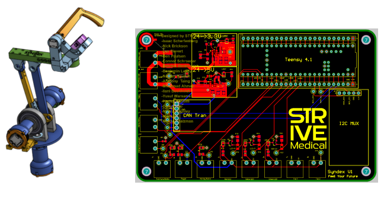
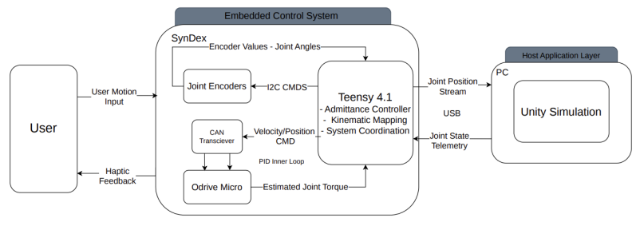
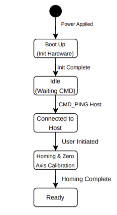

Overview
I guided SynDex firmware development, architecting and delegating work relative to whole firmware codebase flow, hardware-software interactions, embedded sensing, and host-simulation software interactions.

Problem / Objective
The intent of the SynDex project is to overcome the large financial barriers of entry to surgical simulation practice. Most surgical simulation tools cost thousands of dollars; such as the dvSS SimNow2 costing $89K, RobotiX Mentor costing $137.5K, or Versius Trainer being $100K. Prices out of reach for most individuals and outside the realm of practical spending for many institutions. SynDex is an ongoing project, intended to cost no more than $4K while providing a portable, realistic controller for unlimited surgical simulation practice.
My Role
I served as Lead Firmware Engineer, led firmware development across multiple contributors, and coordinated firmware architecture, priorities, and interfaces across electrical, software, and project leadership teams.
More specifically, architected the SynDex custom USB communication format and led discussion around firmware state machine flow. Additionally reviewed more code than I can recall, performed hardware-level peripheral troubleshooting, and delegated firmware tool development across my 5-member subteam.
System Architecture
Measurements relayed to the firwmare from joint encoders and the ODrive Micro FOC controllers are wrapped into USB packets and transmitted to the host PC's Unity engine. Measurements received by Unity drove the game engine's game environment, allowing users to interact with a sandbox or surgery environment.

